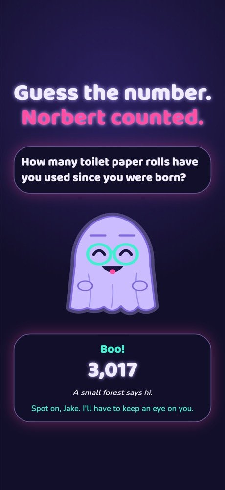

Norbert
당신의 인생을 통계로 만드는 유령.
Norbert는 안경 쓴 너드 유령입니다. 당신이 태어난 날부터 클립보드를 들고 따라다니며 모든 걸 세어 왔죠. 휴지 롤 개수, 걸은 거리, 흘린 땀의 양까지.
휴대폰을 돌려 가며 자신에 대한 정보를 조금 입력하고 숫자를 맞혀 보세요. 그러면 Norbert가 정답을 공개하고, 가장 멀리 빗나간 사람을 놀립니다.
통계는 영어, 프랑스어, 이탈리아어, 독일어, 스페인어, 포르투갈어로 제공됩니다. 한국어는 아직 지원하지 않습니다.
App Store다운로드
Google Play출시 예정
스크린샷



플레이 방법
1. Norbert에게 알려주기
나이나 몸무게처럼 한두 가지 정보를 입력하면 결과가 진짜 당신 이야기가 됩니다. 너무 사적이라면? 다른 통계로 넘어가세요.
2. 베팅
차례대로 다른 사람의 답을 보지 않고 숫자를 예상해 입력합니다.
3. 워!
Norbert가 정답, 감이 오는 비교, 그리고 가장 많이 틀린 사람을 향한 한마디와 함께 나타납니다.
점수
나보다 더 멀리 빗나간 플레이어 한 명당 1점. 아주 가까우면 보너스:
오차 10% 이내 · +2
오차 1% 이내 · +5
원하는 대로 설정
휴대폰 하나로 2~8명, 5·10·15 라운드. 중단한 게임은 나중에 이어서 할 수 있습니다.
당신에 관한 101가지 통계
평생의 기록부터 지금 이 순간 몸에서 일어나는 일까지. 자란 머리카락, 눈 깜박임, 심장 박동, 먹은 피자… 그럴듯한 숫자, 엉뚱한 질문.
광고 없음, 추적 없음
Norbert는 무료입니다. 계정, 광고, 인앱 결제, 추적이 없습니다. 앱은 완전히 오프라인으로 작동하며, Norbert에게 알려준 내용은 휴대폰 밖으로 나가지 않습니다.
제 작업이 마음에 들고 계속 응원하고 싶다면, 커피 한 잔이 큰 힘이 됩니다.
커피 한 잔 사주기크레딧
- 디자인 및 코드
- Jeff · Two Pins Studio
- 제작 도구
- Flutter